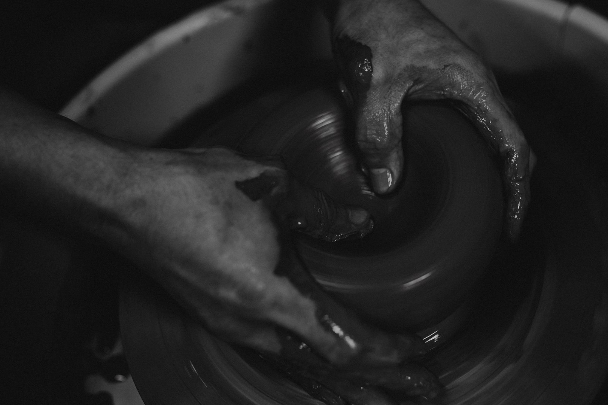
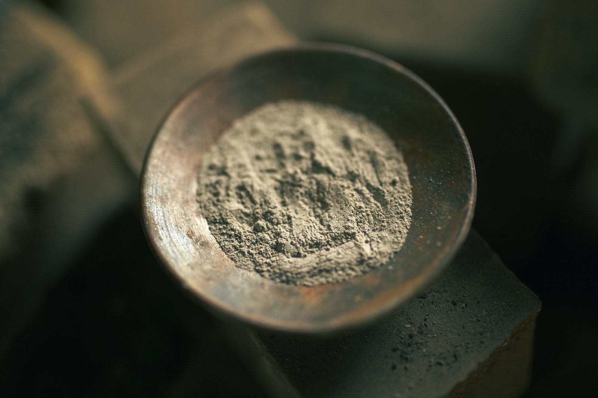
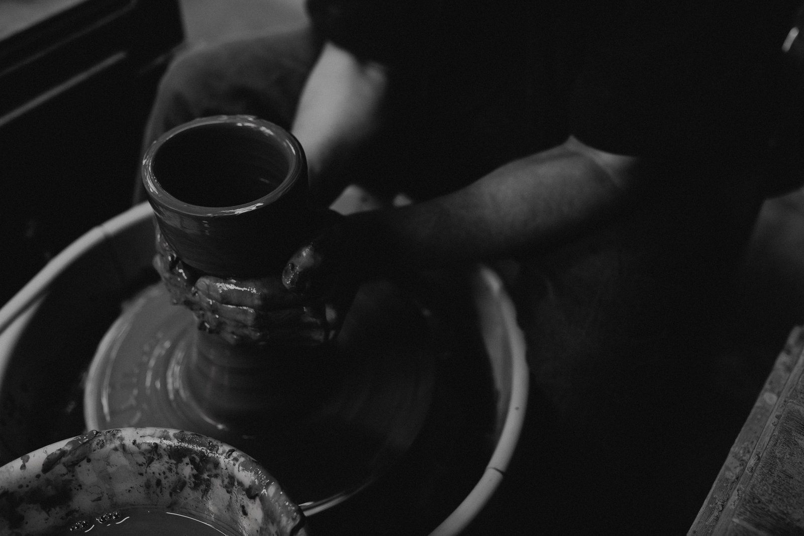
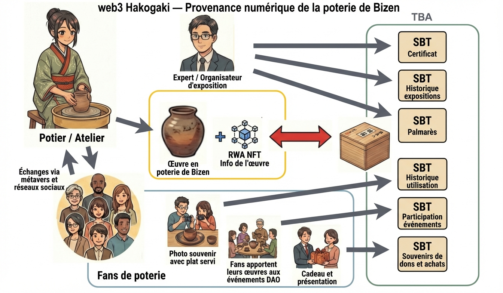
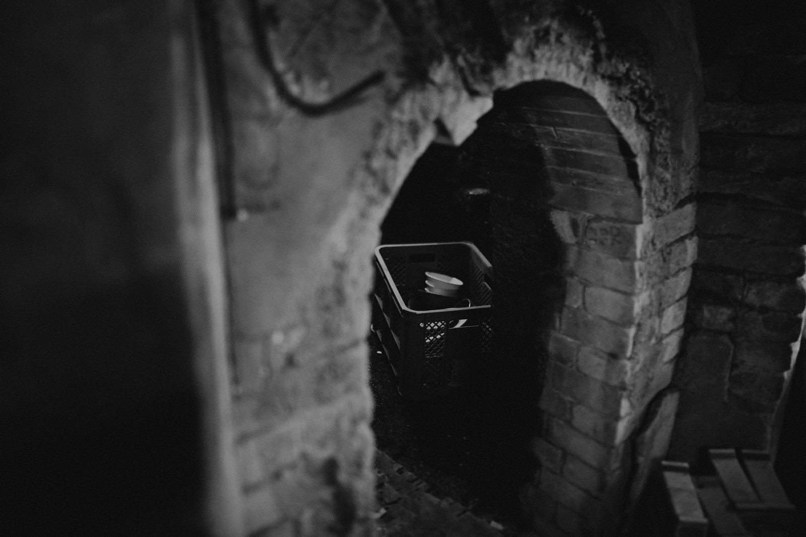
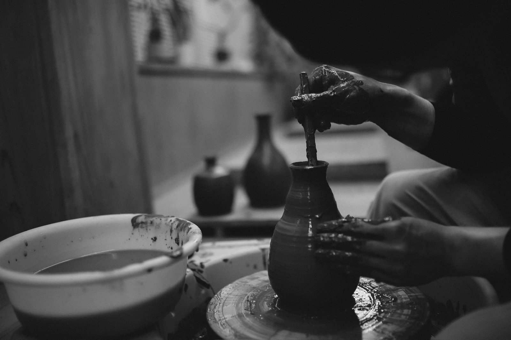
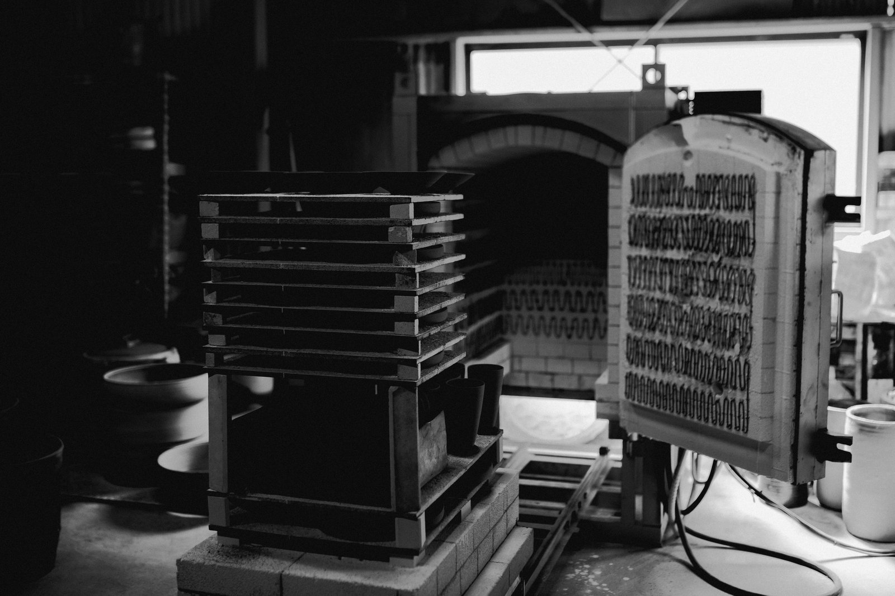
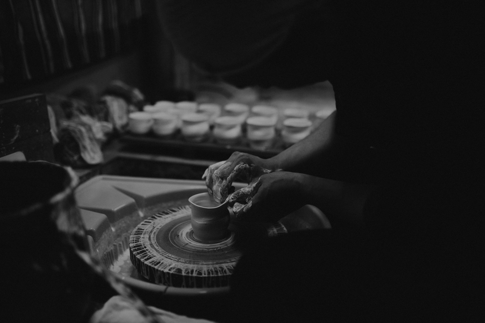
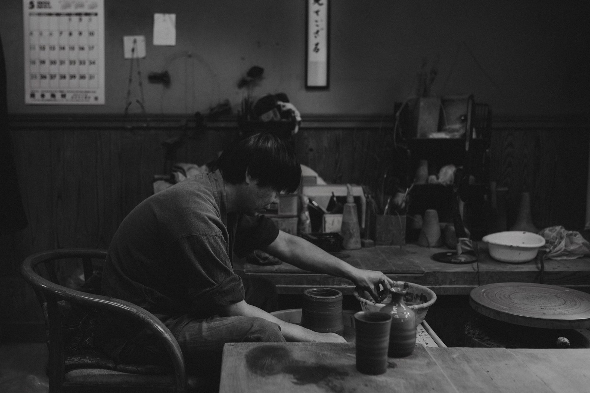

Une histoire millénaire, une technologie nouvelle.
Façonner l'avenir de l'artisanat traditionnel avec les NFT

Nihon Rokkoyō
Les Six Anciens Fours du Japon
Les Six Anciens Fours désignent collectivement six régions de production céramique représentatives, en activité continue depuis l'époque médiévale.
Au printemps 2017, ils ont été classés comme patrimoine culturel du Japon.
La Bizen-yaki, artisanat traditionnel de la préfecture d'Okayama, est l'un de ces six trésors.


Produits


Organisation

L'artisanat traditionnel ancré dans la blockchain
La blockchain protège des informations fiables et vérifiables.
Notre vision
La Bizen-yaki — l'un des Six Anciens Fours classés au patrimoine culturel du Japon, avec plus de mille ans d'histoire.
Nous nous engageons à préserver et à faire rayonner cette culture artisanale traditionnelle.
Nos activités
BizenDAO est une communauté où potiers, fours, galeries et passionnés du monde entier se retrouvent pour approfondir leur lien avec la céramique de Bizen.
Elle a été fondée en tant que DAO social à but non lucratif pour soutenir l'artisanat traditionnel et la revitalisation régionale dans la zone d'Okayama-Bizen.
Son fonctionnement est soutenu par les dons des acquéreurs d'œuvres de Bizen-yaki liées à des NFT.
Les opérateurs et soutiens qui construisent et maintiennent l'écosystème participent également en tant que membres du DAO.
Toute personne possédant une œuvre de Bizen-yaki liée à un NFT devient automatiquement membre de BizenDAO.
Même sans NFT, chacun peut rejoindre librement la communauté et échanger via notre serveur Discord.


Nous croyons que la véritable valeur d'un NFT réside dans les informations inscrites sur la blockchain.

Nous lions les NFT à des actifs réels (œuvres d'art), les traitant comme des Real World Assets.

Une solution de stockage décentralisée révolutionnaire, garantissant la pérennité et la sécurité des données.

Chaque pièce de céramique peut posséder son propre portefeuille numérique.

Des tokens non transférables qui conservent des données essentielles, donnant à chaque pièce une âme.
Discord
Une communauté qui unit la céramique de Bizen et la philosophie DAO
Ouvert à tous — artisans, amateurs d'art et curieux du Web3.
Points de don
Consultez votre total cumulé de dons et votre solde de points actuel.
Mon espace
Consultez vos œuvres possédées et vos accréditations de membre. Enregistrez sur la blockchain le voyage partagé avec votre œuvre.